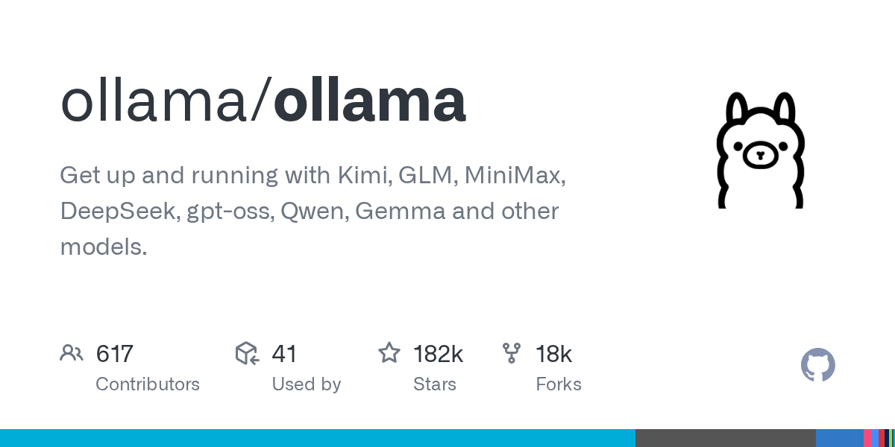
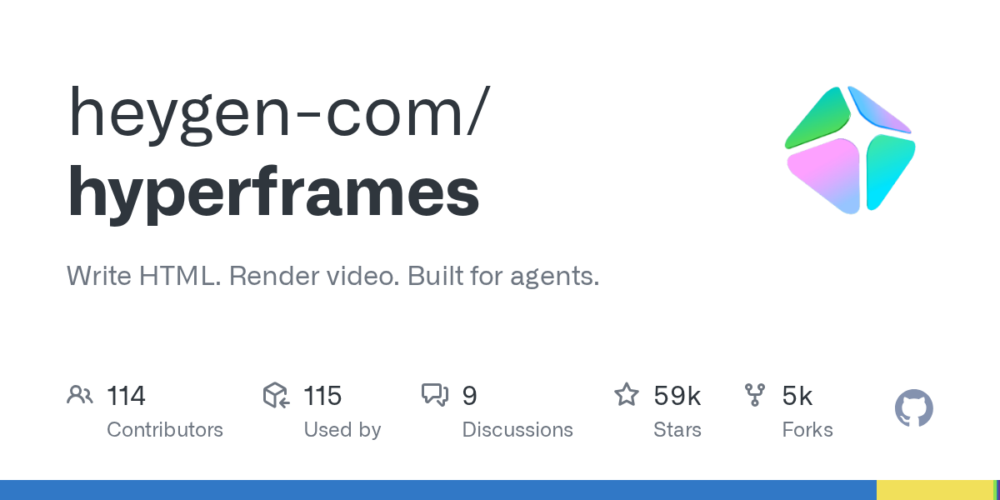
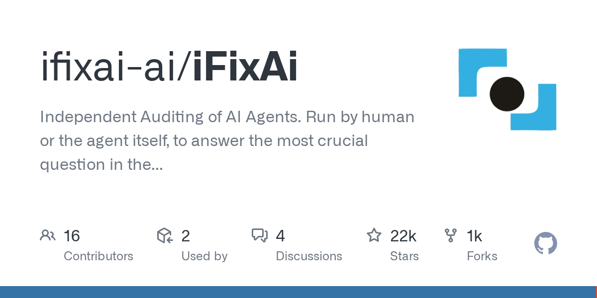
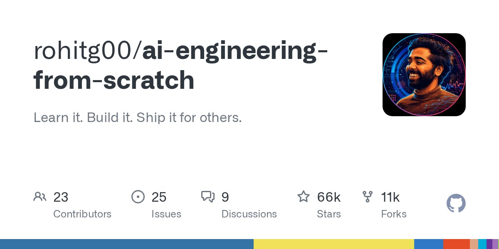
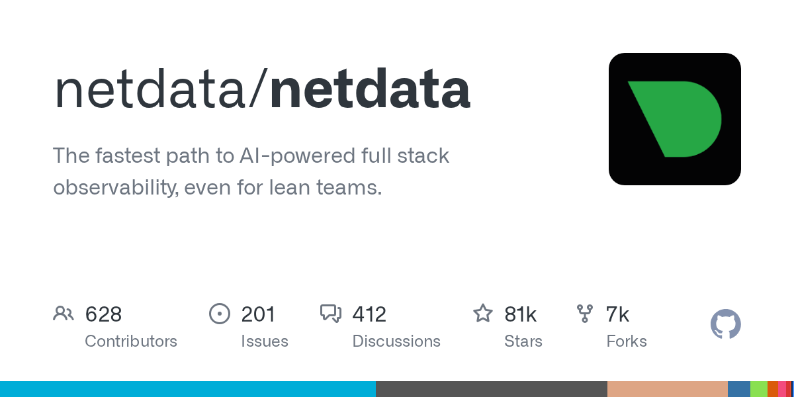

01 주요 릴리스 이번 호 머리기사
명령어 한 줄로 오픈 모델을 내 PC에서 실행
ollama/ollama는 Kimi, GLM, MiniMax, DeepSeek, gpt-oss, Qwen, Gemma 같은 오픈 모델을 내 컴퓨터나 서버에서 직접 실행하게 해 주는 도구다.

Weekly GitHub Brief
에이전트 도구는 세션이 끝나도 작업 맥락을 이어 주는 기억 장치와, 맡은 업무대로 일하는지 채점하는 감사 도구가 올라왔다. 문서 검색에서는 벡터 없이 문서 구조를 따라 답을 찾는 도구가 FinanceBench 98.7%를 내세웠다. 인프라 쪽에서는 명령어 한 줄로 오픈 모델을 내 PC나 서버에서 돌리는 도구가 눈에 띄었고, 서버 지표를 초 단위로 모으는 Netdata는 최신판 배포가 중단됐다. 각 저장소의 라이선스 조건은 이번 목록에 없어 경향을 짚지 못했으니 도입 전에 따로 확인해야 한다. 사내에서는 개발팀 PC 한 대에 오픈 모델을 설치해 실행해 보는 것부터 시험해 볼 만하다.

Editor's Pick
01 주요 릴리스 이번 호 머리기사
ollama/ollama는 Kimi, GLM, MiniMax, DeepSeek, gpt-oss, Qwen, Gemma 같은 오픈 모델을 내 컴퓨터나 서버에서 직접 실행하게 해 주는 도구다.

05 주요 릴리스
“transformers는 글·이미지·음성 모델의 구조 정의를 한곳에 모아, 다른 도구들이 같은 정의를 가져다 쓰게 하는 것을 목표로 한다.”
06 에이전트·툴링
“claude-mem은 에이전트 도구가 지난 세션 기록을 기억하게 하는 플러그인이다.”
이번 주 가장 뜨거웠던 저장소 하나를 골랐습니다. 아래 섹션에도 그대로 실려 있습니다.
huggingface/transformers
글·이미지·음성·영상 AI 모델을 같은 방식으로 불러 쓰고 학습시키는 파이썬 도구 모음이다.
“transformers는 글·이미지·음성 모델의 구조 정의를 한곳에 모아, 다른 도구들이 같은 정의를 가져다 쓰게 하는 것을 목표로 한다. transformers가 정의를 지원하는 모델은 학습 도구와 추론 엔진, llama.cpp 같은 인접 도구 대부분과 호환된다고 밝혔다.”
★ 167,043이번 주 +217PythonApache-2.0 사내 사용 가능릴리스 v5.19.0 (10.06)최근 활동 10.08테스트예제AGENTS.md

지난 7일 동안 스타가 빠르게 늘었거나 새로 등장해 주목받는 저장소입니다.
heygen-com/hyperframes
HTML 문서에 장면을 적으면 영상 파일로 렌더링해 주는 오픈소스 도구다.
“HyperFrames는 HTML 문서에 장면을 적으면 영상이 나오는 도구라서, AI 에이전트에게 영상 제작을 맡기기 쉽다. 만든 쪽은 에이전트가 이미 HTML을 쓰고 있고, 명령줄 도구도 기본적으로 사람의 입력 없이 돌아간다고 설명한다.”
★ 58,669이번 주 +4,410TypeScriptApache-2.0 사내 사용 가능릴리스 v0.8.140 (10.07)최근 활동 10.08예제AGENTS.md
ifixai-ai/iFixAi
AI 에이전트가 맡은 업무대로 일하는지 채점해 점수표를 내는 오픈소스 감사 도구다.
“iFixAi는 AI 에이전트가 맡은 업무대로 일하는지 점검해 점수표를 내는 독립 감사 도구로, 사람이 돌릴 수도 에이전트가 직접 돌릴 수도 있다. 만든 쪽은 기존 평가·레드팀·관측 도구가 토큰 효율과 지연 시간, 프롬프트 인젝션 같은 기술 성능을 주로 본다고 설명한다.”
★ 22,393이번 주 +5,716PythonApache-2.0 사내 사용 가능릴리스 v4.0.0 (09.15)최근 활동 10.08

rohitg00/ai-engineering-from-scratch
수학 기초부터 에이전트까지 AI 개발을 직접 코드로 짜며 배우는 무료 강의 저장소다.
“이 저장소는 수학 기초부터 자율 에이전트까지 한 순서로 묶은 AI 개발 강의로, 알고리즘을 직접 만든 뒤 실제 라이브러리로 같은 일을 해 보게 한다. 만든 쪽은 AI 자료가 논문, 모델 조정 글, 에이전트 시연으로 흩어져 서로 잘 맞지 않는다고 지적한다.”
★ 65,645이번 주 +4,254PythonMIT 사내 사용 가능릴리스 v2026.10.1 (10.06)최근 활동 10.06AGENTS.md

이번 주 안에 정식 릴리스를 낸 프로젝트의 의미 있는 버전 변화입니다.
ollama/ollama
Kimi, GLM, MiniMax, DeepSeek, gpt-oss, Qwen, Gemma 같은 오픈 모델을 내 컴퓨터나 서버에서 직접 실행하게 해 주는 도구다.
“Ollama는 오픈 모델을 실행하고 다른 앱이 그 모델을 부르는 창구도 맡는다. 연동 목록에는 Open WebUI 같은 채팅 화면, RAGFlow와 MaxKB 같은 문서 검색 앱, Cline과 Continue 같은 코딩 보조 도구가 올라 있다.”
★ 182,517이번 주 +587GoMIT 사내 사용 가능릴리스 v0.40.1 (10.07)최근 활동 10.08AGENTS.md
huggingface/transformers
글·이미지·음성·영상 AI 모델을 같은 방식으로 불러 쓰고 학습시키는 파이썬 도구 모음이다.
“transformers는 글·이미지·음성 모델의 구조 정의를 한곳에 모아, 다른 도구들이 같은 정의를 가져다 쓰게 하는 것을 목표로 한다. transformers가 정의를 지원하는 모델은 학습 도구와 추론 엔진, llama.cpp 같은 인접 도구 대부분과 호환된다고 밝혔다.”
★ 167,043이번 주 +217PythonApache-2.0 사내 사용 가능릴리스 v5.19.0 (10.06)최근 활동 10.08테스트예제AGENTS.md
에이전트 프레임워크, MCP 서버, 코딩 보조, LLM 앱 개발 도구입니다.
thedotmack/claude-mem
에이전트가 세션 중에 한 일을 기록하고 AI로 요약해, 이후 세션에 관련 내용만 되돌려 주는 기억 플러그인이다.
“claude-mem은 에이전트 도구가 지난 세션 기록을 기억하게 하는 플러그인이다. Claude Code 외에 Codex, Gemini, Copilot, OpenCode와도 연동한다고 소개한다. 기록은 SQLite에 쌓고 키워드와 의미 기반 검색을 섞어 쓴다.”
★ 97,850이번 주 +2,900TypeScriptApache-2.0 사내 사용 가능릴리스 v13.34.2 (10.06)최근 활동 10.07테스트

VectifyAI/PageIndex
긴 문서를 트리 구조로 색인하고 모델이 추론으로 필요한 부분을 찾게 하는, 벡터 없는 RAG 도구다.
“PageIndex는 벡터 검색 없이 문서 트리를 따라 모델이 읽을 부분을 추론해 고른다. 추론이 닿은 노드만 읽으므로 질문당 비용이 문서 길이에 따라 늘지 않는다고 만든 쪽은 밝혔다. 로컬 모드에서는 서버, 벡터 DB, PageIndex API 키가 필요 없다.”
★ 38,937이번 주 +1,549PythonMIT 사내 사용 가능릴리스 v0.2.21 (10.01)최근 활동 10.07테스트예제

추론 서빙, 런타임, 양자화, GPU 커널, 벡터 DB 등 모델을 돌리는 바탕입니다.
netdata/netdata
서버와 인프라 상태를 초 단위로 수집해 대시보드와 알림, 이상 탐지를 자동으로 제공하는 모니터링 도구다.
“Netdata는 서버 지표를 초 단위로 모으고 대시보드와 이상 탐지를 자동으로 만들어 준다. 에이전트를 서버마다 설치하고, 지표를 상위 서버(Parent)로 모아 볼 수도 있다. Netdata Cloud는 선택 사항이며, 쓰지 않아도 동작한다.”
★ 80,838이번 주 +104GoGPL-3.0 법무 확인릴리스 v2.12.0 (09.30)최근 활동 10.08테스트
